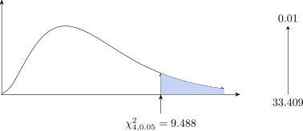

4.1 Contingency Table
A contingency table is used when results are put in cells as: Rows and Columns.
| a | b | \(R_1\) |
| c | d | \(R_2\) |
| \(C_1\) | \(C_2\) | \(g\) |
\(\therefore \) a \(2\times 2\) contingency table has 1 df.
| \(R_1C_1/g\) | \(R_1C_2/g\) |
| \(R_2C_1/g\) | \(R_2C_2/g\) |
The table below shows the result of prevention of a disease by vaccination
| Attacked | Not Attacked | ||
| Vaccinated | 20 | 50 | 70 |
| Not Vaccinated | 15 | 15 | 30 |
| 35 | 65 | 100 |
Test the hypothesis that vaccination is effective against the disease.
Solution. \(H_0\): being attacked is independent of vaccination; \(H_1\): the vaccinated are attacked less often. The expected frequencies under \(H_0\) are
| \(\frac {35\times 70}{100}=24.5\) | \(\frac {65\times 70}{100}=45.5\) |
| \(\frac {35\times 30}{100}=10.5\) | \(\frac {65\times 30}{100}=19.5\) |
Every cell differs from its expected value by \(|O - e| = 4.5\). With \(1\) degree of freedom Yates’ correction is applied, reducing each \(|O - e|\) to \(4\): \[\chi ^2 = 4^2\left (\frac {1}{24.5} + \frac {1}{45.5} + \frac {1}{10.5} + \frac {1}{19.5}\right ) = 16(0.2093) = 3.35 .\] The critical value is \(\chi ^2_{0.05,\,1} = 3.841\), so at the \(5\%\) level we fail to reject \(H_0\) (\(P = 0.067\)). The attack rates, \(\frac {20}{70} = 29\%\) among the vaccinated against \(\frac {15}{30} = 50\%\) among the unvaccinated, look different, but with only \(30\) unvaccinated people the evidence falls just short. Without Yates’ correction the statistic would be \(4.5^2(0.2093) = 4.24\), which exceeds \(3.841\): a conclusion this close to the boundary should be reported with its \(P\)-value, not as a bare accept or reject.
The \(\chi ^2\) distribution depends on the df, therefore we write \(\chi ^2_v\). That is \(v=n-1\) is called degree of freedom is the number of expected frequencies which can be varied independently \(2\times 2\) contingency table has \(v=1\) df because a column loses 1 df and the rows lose 1 df to give \(v=(2-1)(2-1)\). The next example uses a random sample of \(4266\) households, classified by type of house and by compound.
Example 4.1. The table records the type of housing occupied by households in three compounds. Test at \(\alpha =5\%\) whether the type of housing varies between the compounds.
Solution.
- 1.
- Set up the hypothesis
\(H_0:\) The type of housing and compound are independent.
\(H_1:\) The type of housing and compound are dependent. - 2.
- Level of significance \(\alpha =5\%\).
- 3.
- Test statistic. Each expected frequency is \[e_{ij}=\frac {(\text {row total})\times (\text {column total})}{\text {grand total}}\] so, for instance, \(e_{11}=\frac {754\times 973}{4266}=171.97\).
Detached Semi-detached Flats Chelstone 171.97 301.88 280.14 Northmead 217.59 381.96 354.45 Kabwata 583.44 1024.16 950.41 Table 36: Expected frequencies under \(H_0\). Each row and column still totals what it did before — a useful check. Then \[\chi ^2=\sum \frac {(O-e)^2}{e} =\frac {(95-171.97)^2}{171.97}+\frac {(297-301.88)^2}{301.88}+\cdots +\frac {(861-950.41)^2}{950.41}=103.96\]
- 4.
- Critical region. With \(r=3\) rows and \(c=3\) columns, \[v=(r-1)(c-1)=2\times 2=4\] and from tables \(\chi ^2_{4,\,0.05}=9.488\). We reject \(H_0\) if \(\chi ^2>9.488\).
- 5.
- Conclusion. \(103.96>9.488\), so we reject \(H_0\): the type of housing does vary between the compounds.
Where the difference lies is worth reading off the table rather than leaving at “significant”. Chelstone has \(95\) detached houses against \(172\) expected and \(362\) flats against \(280\); Kabwata has \(703\) detached against \(583\). Those three cells alone contribute \(34.5+23.9+24.5=82.9\) of the total \(103.96\). The compounds differ mainly in the balance between detached houses and flats, not across the board.

Questions on this section
Stuck on something here? Ask below and it stays attached to this topic.